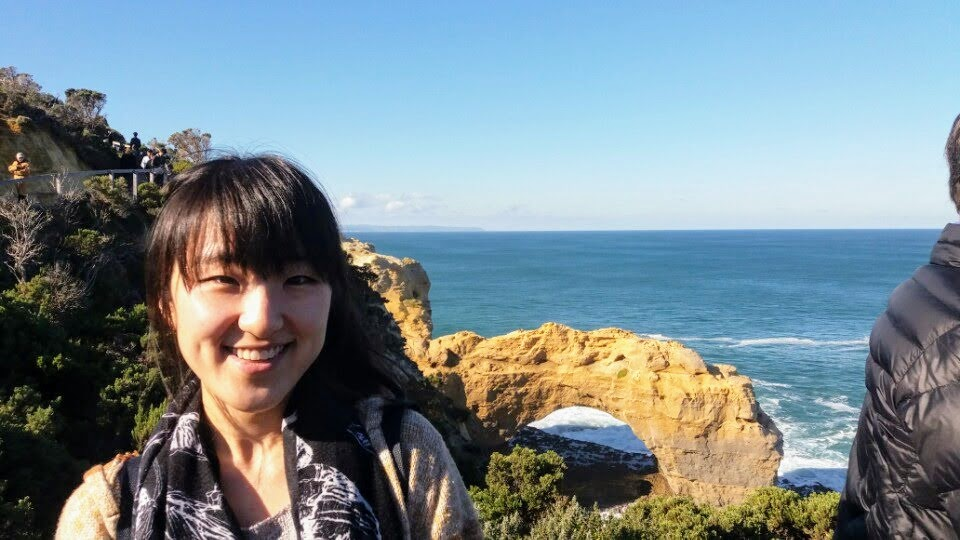
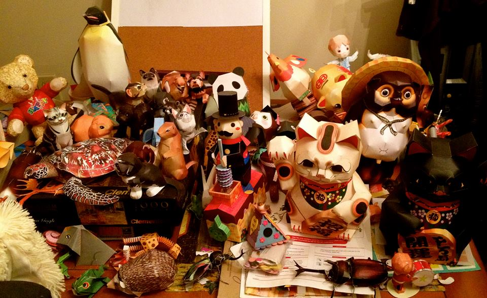

Heyrim Cho
Assistant Professor, Department of Mathematics
University of California, Riverside
My research interest is in mathematical and computational
biology, uncertainty quantification, and scientific computing. I have been developing numerical
methods for high-dimensional stochastic systems and stochastic processes. I
also work on modeling cancer growth and drug resistance
in the purpose of optimizing anticancer therapies, and study approaches to do uncertainty quantification in data-driven models.
I was a Brin postdoc fellow at University of Maryland,
College Park, working with Doron
Levy.
I received my Ph.D. from the Division of Applied Math at Brown
University, working with George Em Karniadakis.
I received my B.S. in Applied mathematics and M.S.in Mathematics from KAIST (Korea Advanced Institute on Science and Technology),
working with Professor Chang-Ock Lee.
Research Interests
Mathematical and Computational Biology, Mathematical Oncology, Data-driven modeling
Stochastic modeling and Uncertainty Quantification
Computational methods for high-dimensional stochastic systems
Multi-scale modeling and simulations
Numerical PDE and High-performance computing
Preprint
E. Kim, R. Schenck, J. West, W. Cross, V. Harris, J. McKenna, H. Cho, E. Coker, S. L-Kramer, K. Tsai, E. Flores, C. D. Gatenbee ‘Targeting the Untargetable: Predicting Pramlintide Resistance Using a Neural Network Based Cellular Automata’ bioRxiv, https://doi.org/10.1101/211383
H. Cho, R. Rockne, 'Mathematical modeling with single-cell sequencing data',
https://www.biorxiv.org/content/10.1101/710640v1,
submitted, 2019
H. Cho, D. Levy, 'The Impact of Competition Between Cancer
Cells and Healthy Cells on Optimal Drug Delivery',
https://arxiv.org/abs/1806.07477, submitted, 2018
Publications
Book Chapters
H. Cho, D. Venturi, G. E. Karniadakis, ‘Numerical methods for high-dimensional kinetic equations’, SEMA
SIMAI Springer Series, Uncertainty Quantification for Hyperbolic and
Kinetic Equations, 2017
D. Venturi, H. Cho, G. E. Karniadakis, ‘Mori-Zwanzig approach to uncertainty quantification’, Springer,
Handbook on Uncertainty Quantification, 2017
Theses
H. Cho, ‘High-Dimensional
Response-Excitation PDF Methods for Uncertainty Quantification and
Stochastic Modeling’, Brown University (Ph.D. 2015), Advisor: Professor
G. E. Karniadakis. PDF
H. Cho, ‘Implementation of Dual Iterative Substructuring
methods on a Parallel computer’, KAIST (MS 2009), Advisor: Professor
C.-O., Lee. PDF
Invited talks in conferences
Check out some of my talks! ->
SIAM-UQ12,
SIAM-UQ14
Check out some of my posters! ->
IMO16,
IMA18
· 'Modeling continuous levels of cell states in cancer development and
drug resistance’, JMM2019, Baltimore MD, 2019
· 'Modeling continuous levels of cell differentiation in acute myeloid
leukemia (AML)’, SIAM-LS18, MN, 2018
· 'Modeling continuous levels of resistance to
combination therapy in cancer’, SMB2018, Sydney, 2018
· 'Modeling continuous levels of resistance to
combination therapy in cancer’, Division of Math Oncology, Beckman Research Institute, 2018
· 'Numerical methods for uncertainty quantification - from noise parameterization to efficient simulation of parameterized stochastic PDE’, Applied Mathematics Colloquium, UMBC, 2017
· 'High-dimensional stochastic simulation and dimension reduction techniques’, MathSci Seminar, KAIST, 2017
· 'Modeling chemotherapy-induced selection of
drug-resistant traits during tumor growth’, Math. Meth. in Bio. Medicine, WPI, 2017
· 'Modeling the dynamics of heterogeneity in response to chemotherapy’, SMB2017, Utah, 2017
· 'Uncertainty propagation across distinct PDF and stochastic spectral systems', (SIAM-UQ16), EPFL, 2016
· 'Uncertainty quantification based on the response-excitation PDF and reduced order PDF by using Mori-Zwanzig PDF approach’, (SIAM-CSE15), Salt Lake City UT, 2015
· 'High-dimensional response-excitation PDF method : separated representation and ANOVA approximation',
International Conference on Spectral and High Order Methods (ICOSAHOM 2014), Salt Lake City UT, 2014
· 'Karhunen-Loeve expansion for multi-correlated stochastic processes'
SIAM-UQ14, Savannah GA, 2014
· 'Study of the stochastic inviscid Burgers equation with the joint response-excitation PDF equation',
4th International congress on Computational Engineering and Sciences (FEMTEC 2013), Las Vegas NV, 2013
· 'Numerical methods for high-dimensional response-excitation PDF equations',
14th International conference on Approximation Theory (AT14), San Antonio TX, 2013
· 'Spectral/hp element and discontinuous Galerkin methods for response-excitation PDF equations',
SIAM-CSE13, Boston (MA), 2013.
· 'A new approach to UQ based on the joint excitation-response PDF: Theory and simulation',
SIAM-UQ12, Raleigh NC, 2012
